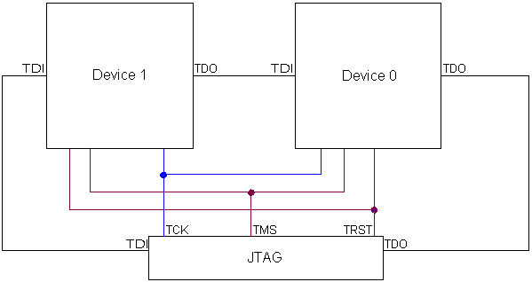

- Important information
- New features
- Known problems
- Program corrections
- User guide corrections
- Miscellaneous
- Release history
Important information
J-Link Ultra can be calibrated to ensure accurate power measurements. To calibrate J-Link Ultra follow these steps:
- Make sure the J-Link Ultra JTAG connector is disconnected from the target board
- Connect J-Link Ultra to the PC
- Start J-Link Commander (
Program Files\IAR Systems\Embedded Workbench 5.4\arm\bin\jlink.exe) - Type "calibrate"
The J-Link/J-Trace probe has a built-in flash programming capability for some devices. This capability might in some cases conflict with the flash loader mechanism provided by the debugger. For example when disabling the debugger flash loader with the intent of debugging directly in RAM, the J-Link/J-Trace built-in flash loader might still be active causing unexpected results. The J-Link/J-Trace built-in flash loader can be enabled/disabled using the J-Link control panel accessible from the Windows task bar when the Embedded Workbench is in debug mode.
To J-Link DCC file names have changed in version 5.20. Use
JLINKDCC_Process.c, JLINKDCC.h, JLINKDCC_HandleDataAbort.sinstead ofDCC_Process.c, DCC_Process.h, and DCC_HandleDataAbort.s.To debug with J-Link, the USB driver has to be installed. The driver is found in the
drivers\JLinkdirectory on the installation CD-ROM. In addition, it is available in the...\arm\drivers\JLinkdirectory in the installation.Tips on how to use J-Link in C-SPY can be found in the technical note 76557.
For more information on installing J-Link, refer to the
IAR Embedded Workbench Debugging Guide
and the
J-Link / J-Trace User Guide.
New features
- None.
Known Problems
-
Limitation: Intel XScale is currently not supported.
-
Limitation: DCC is currently not supported for ARM11.
-
Information about known problems in the low-level J-Link C-SPY driver can be found in the release notes for J-Link ARM DLL.
-
The debugger might close unexpectedly when reading from a non-existent peripheral location.
[EW22344] -
Sometimes when starting a new debug session using J-Trace CM3 with the STM32F207ZG-SK board, you can get the error "No trace frequency measured" depending on whether debugging with trace was recently performed. If this occurs, just click
OKto continue.
[EW22550]
Program Corrections
-
In EWARM 6.30.3:
The ETM port is now initialized correctly when an STM32 device is debugged using J-Trace.
[EW22796,EW22822] -
In EWARM 6.30.4:
Trace port is now enabled when enabling ETM trace on STM32F4xx.
[EW22903] -
In EWARM 6.30.4:
PINSEL10 is no longer set by debugger when using SWO with LPC17xx.
[EW22698]
User guide corrections
- None.
Miscellaneous
-
J-Link is shipped with a 20-pin JTAG connector. 14-pin JTAG targets can
be connected with a cable as shown below:

Debugging multiple ARM cores
J-Link can handle multicore debugging. In this case multiple ARM devices are connected to the same JTAG connector as shown below:

Release history
V6.21 2011-07-05
Program corrections-
In EWARM 6.21.2:
Only relevant bits in theRCC_AHB1ENR/RCC_AHBENRandGPIOEregisters are enabled when enabling ETM trace on STM32F2xx/STM32L15x.
[EW22552] -
In EWARM 6.21.2:
The J-Link flash loader mechanism now works for STM32L15x devices.
[EW22639]
- None.
V6.20 2011-04-29
Program corrections-
The J-Link driver instruction set simulation for 32-bit Thumb instructions on Cortex-A/R targets now works correctly.
[EW22179] -
The J-Link flash breakpoints now work properly on LPC ARM7 devices also when the mapping is changed via the
MEMMAPregister in the target application.
[EW22187] -
In EWARM 6.20.2:
The C-SPY macro__setCodeBreaknow works as expected.
[EW22410]
- None.
V6.10 2010-11-04
Program corrections-
The debugger no longer tries to obtain data from ETM when ETM isn't available.
[EW21816] -
It is now possible to debug on LPC 2378 using a J-Link Ultra.
[EW21921] -
In EWARM 6.10.2:
For some JTAG or target errors the debugger could hang forever waiting on execution to stop. It is now possible to choose to abort the debug session or reset and try again to get the control back.
[EW22096] -
In EWARM 6.10.2:
In some cases, when using trace-based features, executing an application in the debugger over a long time no longer results in a Runtime Error! message and an abrupt IAR Embedded Workbench termination.
[EW22122] -
In EWARM 6.10.5:
The semihosting for ARM7 and ARM9 no longer fails if the __vector symbol is located to an address different from 0.
[EW22242]
- None.
V5.50 2010-04-21
Program corrections-
There was an inconsistency between the J-Link control panel and the C-SPY debugger when showing information about the actual breakpoint type used on target.
[EW21604] -
The error message when setting a breakpoint fails was not informative enough.
[EW21605] -
In EWARM 5.50.5:
Problems related to the proper execution and mapping of the on-chip bootloader on NXP LPC11xx and LPC13xx devices have been corrected.
[EW21769] -
In EWARM 5.50.5:
Access to specific memory areas no longer results in the fatal error message "Failed to prepare indirect memory access, no RAM area configured!".
[EW21801] -
In EWARM 5.50.5:
In some cases where a fatal error appear, the debugger no longer ends with a crash.
[EW21827] -
In EWARM 5.50.6:
Implemented the special reset sequence needed by TI Stellaris Tempest/Firestorm devices.
[EWARM-973]
- None.
V5.41 2009-12-14
Program corrections- None.
- None.
V5.40 2009-07-10
Program corrections-
Slow download on ARM11 when using J-Link. This has been fixed but requires a J-Link v8 or later to get the higher speed.
[EW20318] -
Hardware reset during execution could lead C-SPY to believe execution had stopped.
[EW21106] -
In EWARM 5.40.4:
SWO trace data is now collected during single step.
[EW21339] -
In EWARM 5.40.4:
Running C-SPY J-Link driver in batch mode now works when connected to an older revision of the STM32F10x device.
[EWARM-685]
-
J-Trace for Cortex-M3 with triggering and filtering conditions.
-
Data breakpoints with value match condition for ARM7, ARM9 and Cortex-M
-
64-bits memory accesses.
V5.30 2009-01-23
Program corrections-
Vector catch functionallity did not work properly and in some cases this could lead to the fact that two breakpoints were set at same address.
[EW20480] -
The diagnostic message "Debugger problem discovered: The debugger has set two breakpoints at the same address 0x00000008." was incorrectly displayed when using vector catch on SWI and having semihosting enabled. This has been corrected.
[EW20604]
-
None.
V5.20 2008-06-24
Program corrections-
For Cortex-M3 the PRIMASK register was always displayed as "0" in the register window.
[EW19974] -
The disassembly window made accesses to the VICAddress register etc. (0xFFFFFF00 - 0xFFFFFFFF ) when displaying the interrupt vectors at 0x00-0x20. This led to that no IRQs were triggered any more.
[EW20160] -
For Cortex-M, the hardware breakpoint was not removed when it was cleared. This happened when there is only one breakpoint set.
[EW20251] -
When using the restore breakpoints feature and ARM11, the debugger could set two breakpoints at the same address.
[EW20221]
-
For Cortex-M, support for Trace and Terminal I/O (output) via SWO.
-
For ARM7 and ARM9, support for Terminal I/O (output) via DCC.
-
Support for the flash download and flash breakpoints features offered by J-Link (optional features). For more information see the J-Link / J-Trace User Guide
-
New reset methods added.
V5.11 2007-11-28
Program corrections-
When using the Attach to program option and having the stack plugin enabled, the debugger crashed when ending a debug session.
[EW19229] -
Single stepping over a breakpoint on Cortex-M3 failed and the target was halted on the breakpoint address.
[EW18892]
-
Support for ARM11.
-
New reset methods added.
V5.10 2007-07-02
Program corrections-
When using the CPU ARM7TDMI-S, some features that are only working on ARM9 were incorrectly available in the menus.
-
Diagnostic messages sent from the J-Link driver during download were incorrectly treated as warnings.
-
For Cortex-M3, the debugger sometimes left hardware breakpoints enabled when stepping which made the target seem to be halted on the current address.
[EW18848]
-
Data breakpoints are supported. For more information, refer to
Part 6. C-SPY hardware debugger systems in the EWARM Debugging Guide
- The debugger can now display trace data from the ETB (Embedded Trace Buffer)
available on some ARM devices. This is supported by both the J-Link and the J-Trace probe.
-
Attach/detach to a running system without interrupting execution (nonintrusive debugging) is now supported.
-
Breakpoints and memory can now be modified during execution.
Global/static variables can be displayed by the Live watch window during execution.
To enable these features on ARM7/ARM9, a DCC handler must repeatedly be
called by the application.
The DCC handler code can be found in
src\debugger\DCC. -
Macros for accessing the co-processor CP15 have been added.
-
Macro for JTAG TRST
__jtagResetTRST()has been added.
V4.41A 2006-12-08
New features-
Live watch window for variables and live access of memory.
-
Setting breakpoints during execution.
-
Possible to show trace timestamps. (J-Trace)
-
Code coverage (J-Trace)
-
Command line option that performs
__jlinkExecCommandmacro calls at startup. -
Macros for direct JTAG access.
-
Information about new features in the low-level J-Link C-SPY driver can be found in the release notes for J-Link ARM DLL.
-
Some CPUs do not emit any trace information for certain instructions during single step due to a bug in the silicon. The debugger did not handle this and an error occured when reading a trace buffer.
[EW18388] -
Trace buffer size setting were incorrectly not saved.
-
Information about program corrections in the low-level J-Link C-SPY driver can be found in the release notes for J-Link ARM DLL.
V4.40A 2006-05-18
-
Support for the Cortex-M series has been added
V4.31A 2006-02-03
Added support for J-Trace with ETM trace.
-
The cspybat.exe command line debug tool crashed when configured to use the J-Link driver.
[EW17782]
V4.30A 2005-06-23
-
In some cases, the debugger could fail to clear temporary breakpoints set to control the execution of the flash loader.
[EW16610, EW16699] The J-Link firmware did not work correctly with ARM946E-S and ARM926EJ-S. The new J-Link driver will automatically update the firmware.
[EW16638]
V4.20A 2005-01-10
-
Changing the Philips LPC212x EXTPOLAR register caused JTAG
disconnection.
[EW16365]
V4.11A 2004-06-10
-
Debugging with big endian byte order did not work.
[EW15030] Combining the options Suppress download and Verify download did not work. The combination of the options Suppress download and Verify download should verify the target content without downloading.
V4.10B 2004-03-09
Flashing code larger than 8 Kbytes was erratic.
V4.10A 2004-02-21
- None.
V1.09 2003-12-15
- First release.